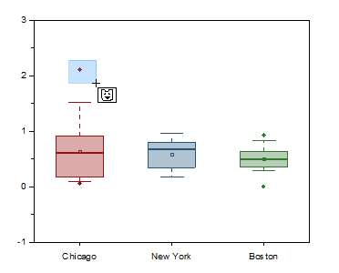
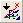
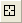

FAQ-827 ボックスチャートのデータポイントをマスクするには？
how-to-mask-data-points-on-box-chart
最終更新日：2020/12/09
Originのバージョンが2020b以降の場合
ボックスチャートのデータポイントをマスクするには、外れ値を表示するか、ボックスの種類で点列を表示して、個々のポイントを示す必要があります。

- 現プロットのマスクポイント
 または、全てのプロットのマスクポイント
または、全てのプロットのマスクポイント  をクリックします。
をクリックします。
- 必要に応じて、スペースキーを使用して選択モードを切り替えます。
- マウスでドラッグしてポイントをマスクします。マスクしたポイントはボックスチャートから除外され、再計算されたボックスが表示されます。さらに、ソースワークシートあるいは出力ワークシート上の対応するデータもマスクカラーで表示され、マスクされたことがわかります。
- マスク操作ツールバーのマスク解除ボタン
 をクリックしてマスクポイントの表示を切り替えできます。また、マスクの解除ボタンをクリックしてから、現プロットのデータマスクを外す
をクリックしてマスクポイントの表示を切り替えできます。また、マスクの解除ボタンをクリックしてから、現プロットのデータマスクを外す  または全プロットのデータマスクを外す
または全プロットのデータマスクを外す 
ボタン（プロット操作・オブジェクト作成ツールバー）をクリックして、マウスドラッグでポイントを選択すると、マスクを外すことができます。または、ワークシートでマスクされたポイントを選択して、範囲のマスク取り外しボタン をクリックすることもできます。
をクリックすることもできます。
Origin 2020以前のバージョン
以前のバージョンでは、グラフ上で直接マスクを適用できませんが、次の回避策を使用できます。
- データポイントからボックスチャートを作成し、Toolsツールバーにあるデータリーダ ツール

を選択します。
- マスクを掛けたいポイントを選ぶと、そのポイントのX、Y座標が表示されたデータ情報 ウィンドウが開きます。
- データ情報 ウィンドウで右クリックし、メニューのワークシートに行く を選択します。
- ワークシートに選択されたポイントの行がハイライト表示されます。
- そのデータセットのセルを再度選択して右クリックし、メニューのマスク：マスクを掛けるを選択します。
キーワード:マスク、ボックスチャート、データポイント
必要なOriginのバージョン: Origin 2015 SR0以降